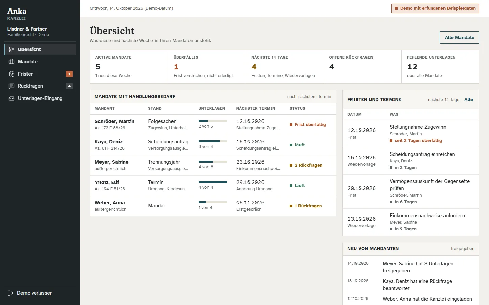
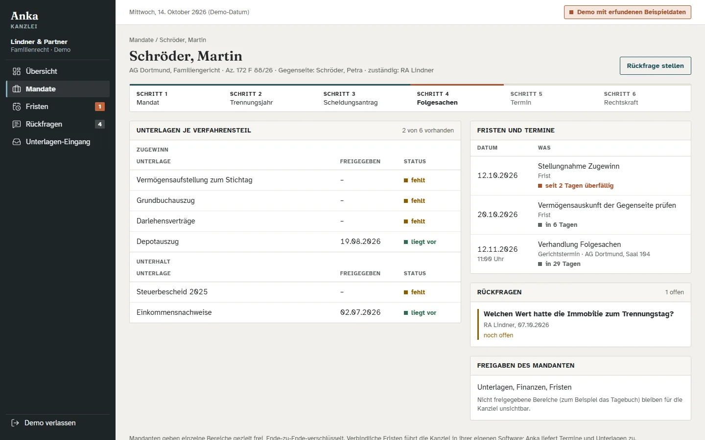

Für Kanzleien im Familienrecht
Ihre Mandanten kommen vorbereitet.
Mandanten ordnen ihre Trennung mit Anka. Mit dem Kanzlei-Zugang sehen Sie, was sie Ihnen freigeben: Unterlagen je Verfahrensteil, offene Rückfragen und die Termine aller Mandate in einer Übersicht.
- Freigabe durch den Mandanten
- Ende-zu-Ende-verschlüsselt
- Termine als Kalenderdatei

Demo mit erfundenen Beispieldaten.
Weniger Nachfragen, schnellere Mandate
Die Vorarbeit passiert beim Mandanten. Sie sehen den Stand, bevor das erste Gespräch beginnt.
Unterlagen je Verfahrensteil
Scheidung, Versorgungsausgleich, Unterhalt, Zugewinn: Für jeden Teil sehen Sie, was vorliegt und was fehlt, mit Datum der Freigabe.
Rückfragen mit Verlauf
Fragen an Mandanten und ihre Antworten stehen beim Mandat, mit Absender und Datum. Kein Suchen in E-Mails.
Fristen und Termine aller Mandate
Gerichtstermine, Fristen und Wiedervorlagen in einer Liste, als Kalenderdatei für Ihre Kanzleisoftware.
Verfahrensstand auf einen Blick
Vom Mandat über Trennungsjahr und Antrag bis zur Rechtskraft: Jedes Mandat zeigt, wo es steht und was als Nächstes ansteht.
Ein Mandat, alles beisammen
Verfahrensstand, Unterlagen, Termine, Rückfragen und die Freigaben des Mandanten auf einer Seite.

So kommen Mandant und Kanzlei zusammen
Einladen
Sie geben dem Mandanten einen Einladungscode, oder der Mandant lädt Ihre Kanzlei aus der App heraus ein.
Freigeben
Der Mandant entscheidet je Bereich, was Sie sehen: Unterlagen, Kinder, Finanzen, Termine. Das Tagebuch bleibt privat, solange er es nicht teilt.
Arbeiten
Sie sehen den Stand, stellen Rückfragen und übernehmen Termine in Ihre Software. Der Mandant sieht Ihre Fragen in seiner App.
Gebaut für das Mandatsgeheimnis
Anka ist so angelegt, dass wir Inhalte nicht lesen können. Das gilt auch für den Kanzlei-Zugang.
Ende-zu-Ende-verschlüsselt
Freigegebene Inhalte werden auf dem Gerät des Mandanten verschlüsselt und erst bei Ihnen entschlüsselt. Unser Server sieht nur unlesbare Daten.
Freigabe pro Bereich
Der Mandant gibt einzelne Bereiche frei und kann die Freigabe zurücknehmen. Was nicht freigegeben ist, bleibt auf seinem Gerät.
Berufsrecht
Für den Pilot gehören ein Vertrag zur Auftragsverarbeitung nach Art. 28 DSGVO und eine Verschwiegenheitsvereinbarung nach § 43e BRAO dazu. Server in der EU.
Keine Rechtsberatung, keine Fristberechnung
Anka organisiert und erklärt allgemein. Die rechtliche Bewertung und die verbindliche Fristenkontrolle bleiben bei Ihnen.
Pilotkanzlei werden
Der Kanzlei-Zugang startet mit wenigen Kanzleien im Familienrecht. Schreiben Sie uns an info@twelvedonkeys.de, gern mit Kanzleiname und Ansprechperson. Die Demo können Sie sofort ansehen.